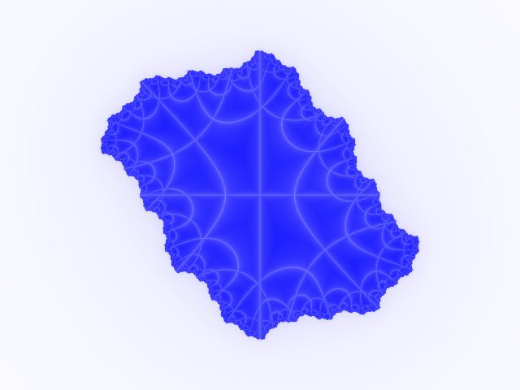
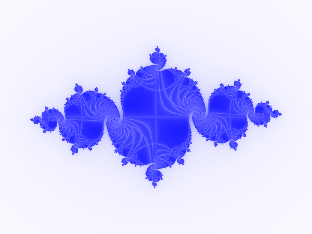
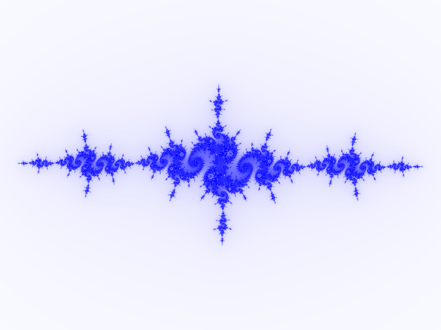
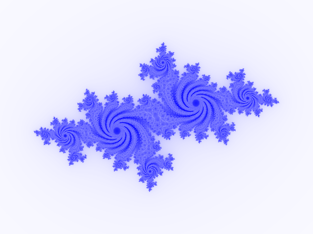
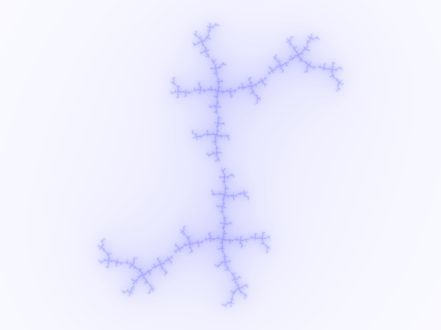
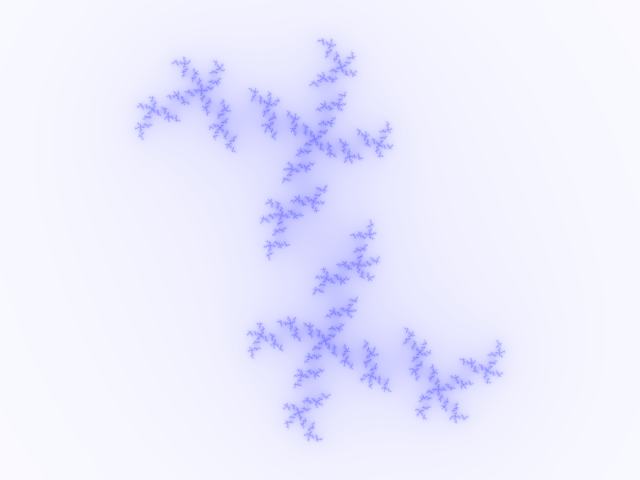
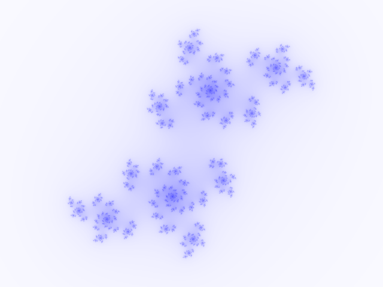

此题源于
2017megcup
下面有一个Javascript程序，对于两个参数real和imaginary，会绘制出一幅Julia分形图像。 有几幅这个程序绘制出的png图像，请给出绘制它们所使用的参数。参数应当恰好有六位小数，且绝对值不超过2 。 你应当以这样的格式输出：输出文件包括7行，第1行对应我们给你的0.png，第2行对应我们给你的1.png，依次类推。每行包含两个小数，以一个空格隔开，是绘制这幅图所需的real和imaginary值。小数点前的0不可省略，小数点后需要有恰好六位。
Real
Imaginary
求下列图片的参数
      
这个问题其实就是在x属于[-2,2]，y属于[-2,2]正方形内寻找一个定点，解法就是网格搜索GridSeaarch